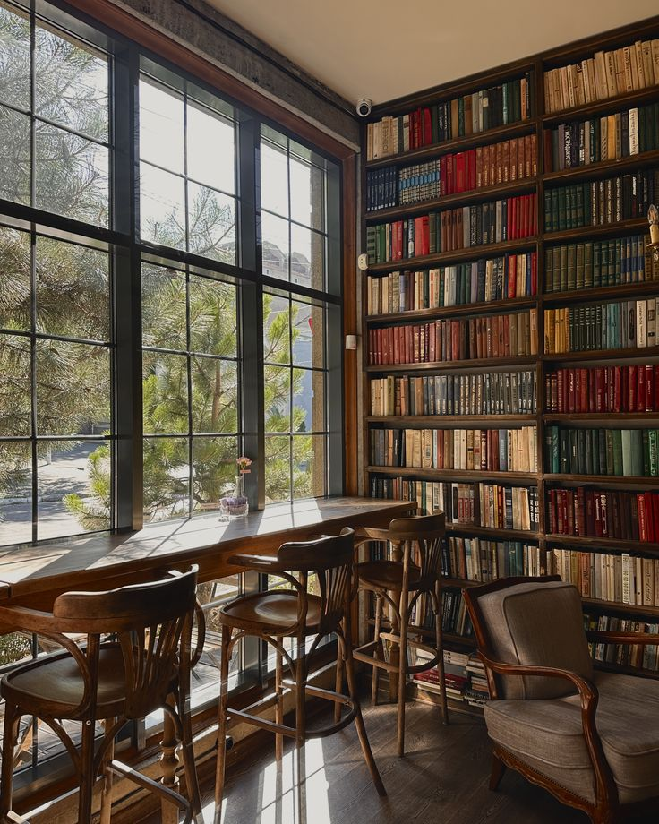
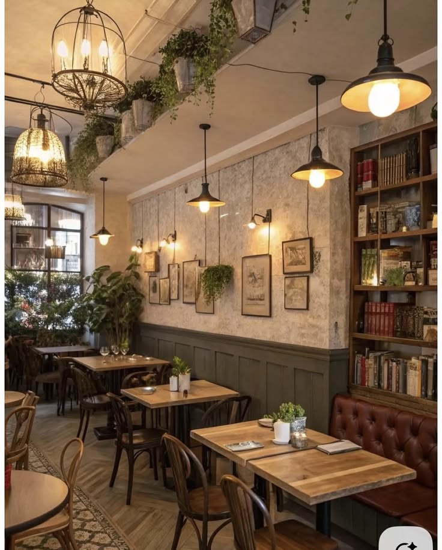

Bem-vindo ao Coffee Shop
A Coffee Shop tem um ambiente confortável e
tranquilo, com uma área externa e um espaço
interno aconchegante.
A decoração segue um estilo vintage, com livros
e plantas. No interior, há diferentes espaços
para sentar, conversar, estudar ou aproveitar
a cafeteria.
A ideia é que cada pessoa possa se sentir à
vontade.
Ambiente

Entrada

Livros

Mesas e cadeiras
Onde estamos?
Rua das Flores, 128 — Centro, Curitiba - PR
Coffee Shop